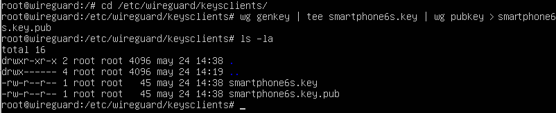

2.2.1.1 Configurar un cliente móvil - Red Externa
1. Crear las claves del cliente
Al contrario de lo que sucede en un sistema de escritorio como macOS o Windows, en el caso de iOS y Android no se suministran las claves del cliente, por lo que hay que generarlas en el servidor. Para este cometido, se crea un directorio keysclients en /etc/wireguard.
root@wireguard:/#mkdir -p /etc/wirguard/keysclients
A continuación, hay que generar las claves exactamente de la misma forma que ya se hizo para para generar las del servidor. El nombrado de las mismas es libre, pero se recomienda que el mismo, permita identificar al dispositivo cliente. Para este caso se llamará smartphone6s, ya que el dispositivo que se conectará es un iphone 6S.
root@wireguard:/#cd /etc/wirguard/keysclients
root@wireguard:/#wg genkey | tee smartphone6s.key | wg pubkey > smartphone6s.key.pub

Hay que anotar la clave privada porque será necesaria para el archivo de configuración del cliente que se realiza en el siguiente apartado.
2. Crear un archivo de configuración para el cliente
Se crea el archivo smartphone6s.conf para añadirle el contenido siguiente:
[Interface]
PrivateKey = [Clave_Privada_Cliente]
Address = [IP_VPN_Cliente]/24
DNS = 8.8.8.8, 8.8.4.4
[Peer]
PublicKey = [Clave_Pública_Servidor]
AllowedIPs = 0.0.0.0/0
Endpoint = [IP_Pública_Servidor]:Puerto
donde,
- PrivateKey: Clave privada del cliente generada anteriormente.
- Address: Ip que se le asignará al cliente en la red, para este caso: 192.168.8.111 con máscara /24.
- DNS: Servidores de nombres a asignar al cliente.
- PublicKey: La clave pública del servidor que se generó en el capítulo 2.2.1 (server.key.pub).
- Endpoint: IP pública del servidor en la WAN y el puerto a la escucha 15000. Para este caso la ip pública es 100.70.153.164.
Para saber la IP pública del servidor, se puede ejecutar el siguiente comando:
root@wireguard:/#curl ipinfo.io/ip
3. Permitir el acceso al cliente en el servidor
Una vez ya se tiene la clave pública y la IP que se le va a asignar al cliente, hay que ejecutar el siguiente comando para permitir la conexión al servidor:
root@wireguard:/#wg set wg0 peer [Clave_Pública_Cliente] allowed-ips [IP_Cliente_VPN]
donde,
- Clave_Pública_Cliente: Es la clave pública del cliente (archivo smartphone6s.key.pub).
- IP_Cliente_VPN: La IP que se desea proporcionar en la conexión VPN al cliente.
root@wireguard:/#wg set wg0 peer 7/D+TMWIbwGiWD3mmtdWg3ybpKswLq6uG+D2s2SgoUY= allowed-ips 192.168.8.111
4. Generar un código QR con la configuración
Sería suficiente con pasar el archivo smartphone6s.conf a la app WireGuard del cliente, pero es más sencillo generar un código QR con el contenido del archivo para no tener que pasarlo manualmente al móvil. Para ello se necesita instalar el siguiente paquete:
root@wireguard:/#apt install qrencode
Con el siguiente comando se genera el código QR del archivo smartphone6s.conf:
root@wireguard:/#qrencode -t ansiutf8 < /etc/wireguard/keysclients/smartphone6s.conf
Este será el código QR que se leerá con la App WireGuard en el smartphone del cliente para cargar el fichero de configuración a la misma y así poder realizar la conexión con el servidor.
5. Redireccionar puerto en router
En el router con salida a internet, se redirecciona las peticiones al puerto UDP 15000 al puerto 15000 UDP del servidor ubuntu (192.168.0.254).
6. Instalar la app cliente de WireGuard
La app de WireGuard está disponible tanto en la Play Store para Android, como en la App Store para iOS (y iPadOS). Así que solamente hay que buscarla o pulsar en los enlaces y descargarla.
7. Configurar el cliente VPN en iOS
1. Abrir WireGuard
Primero hay que abrir la app WireGuard.
2. Agregar túnel
A continuación, hay que pulsar en Agregar un túnel.

3. Escaneado y nombrado del túnel
A continuación hay que seleccionar 'Crear desde código QR'. Se escanea el código QR con la cámara y se le pone un nombre identificativo al túnel.
 |
4. Permiso para añadir configuraciones
El sistema pedirá permiso para añadir y activar la configuración VPN. Hay que pulsar en 'Permitir'.
5. Activación VPN
Por último, se activa la configuración añadida y se observa como aparece la palabra VPN en la información superior del sistema, indicando que se está conectado a Internet a través del servidor configurado.
6. Información de la VPN
Si se accede a la información de la VPN, se observa que los datos que se habían configurado en el fichero smartphone6s.conf se corresponden.
A continuación, se comprueba en el servidor si se ha establecido la conexión. Como se puede observar en la figura inferior, el smartphone está conectado con la ip WAN 36.5.111.11 (ip que le proporciona la red de datos 4G) y con la ip de la red interna VPN 192.168.8.111.

En este momento, el dispositivo ya podría navegar por internet y aprovecharse de los recursos de la red interna.
Obra publicada con Licencia Creative Commons Reconocimiento No comercial Compartir igual 4.0